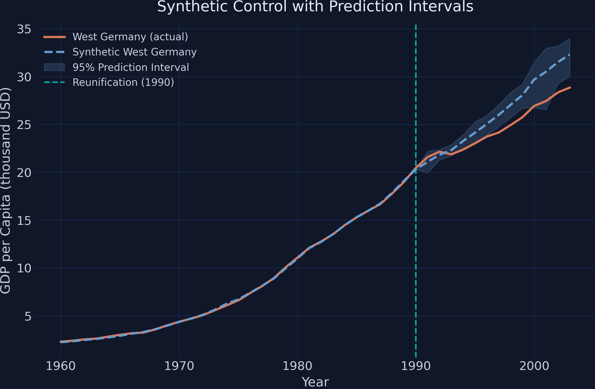
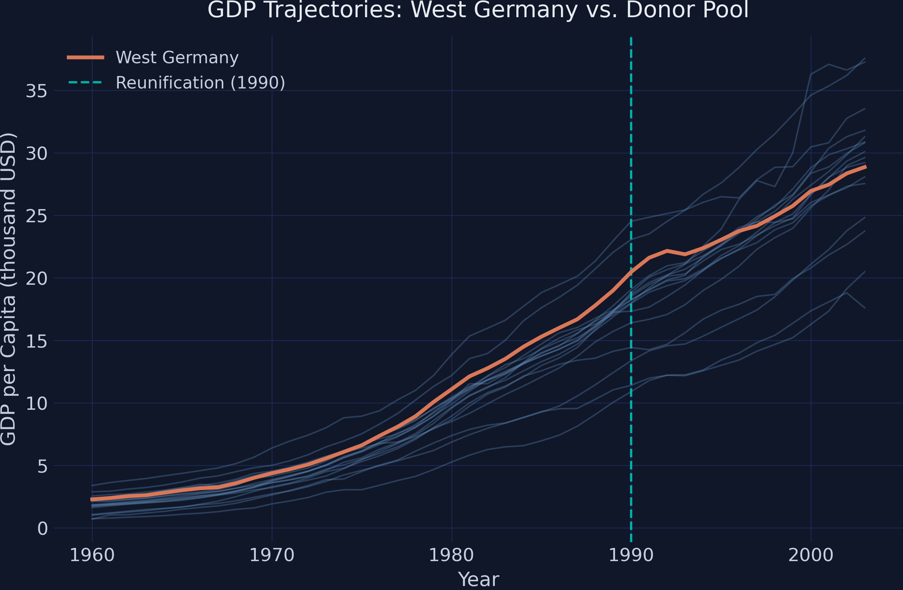
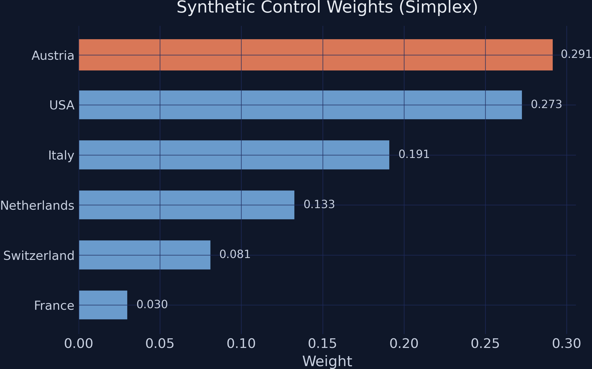
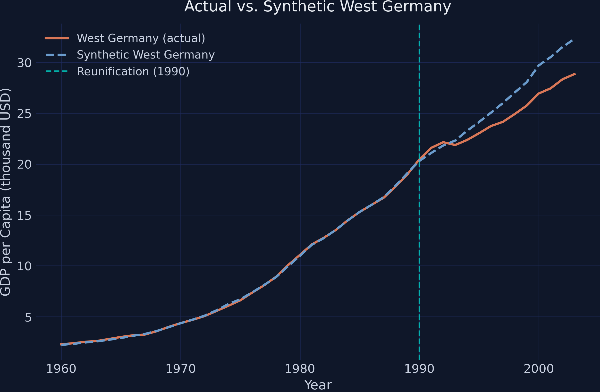

Quantifying uncertainty in Germany’s reunification impact
Nagoya University (GSID)
June 11, 2026
Act I
In 1990, West Germany reunified with the East. Did that integration lower the West’s GDP per capita — and by how much?
There is exactly one treated unit and no control. Where does the counterfactual come from?

Actual West Germany (orange) tracks its synthetic twin (blue) before 1990, then falls below the 95% prediction band after the mid-1990s — the gap is statistically real.
Act II
The treatment effect in each post-1990 year is the difference between what we see and what would have happened:
\[\tau_T = Y_{1T}(1) - Y_{1T}(0)\]
\(Y_{1T}(1)\) is observed; \(Y_{1T}(0)\) — West Germany without reunification — is never observed, so we estimate it.
\[\hat{Y}^{N}_{1T} = \mathbf{x}_T' \hat{\mathbf{w}} = \sum_{j} \hat w_j\, Y_{jT}\]
The simplex constraint keeps the blend honest:
\[\hat w_j \ge 0, \qquad \sum_j \hat w_j = 1\]
Non-negative weights that sum to one make synthetic West Germany a convex combination — it never extrapolates beyond the real donor data.
cointegrated_data=True: GDP series share a common upward drift, so the estimator matches the trend, not a fixed level.

GDP trajectories of all 17 countries; West Germany (orange) tracks the rich cluster, then visibly flattens after the 1990 line.
scpi_pkgfrom scpi_pkg.scdata import scdata
from scpi_pkg.scest import scest # point estimation
from scpi_pkg.scpi import scpi # prediction intervals
prep = scdata(df=data, unit_tr="West Germany", cointegrated_data=True, ...)
est_si = scest(prep, w_constr={"name": "simplex"}) # the weights
pi_si = scpi(prep, w_constr={"name": "simplex", "Q": 1}, # the band
u_missp=True, u_sigma="HC1", e_method="gaussian", sims=200)
Synthetic-control weights: Austria 0.291, USA 0.273, Italy 0.191, Netherlands 0.133, Switzerland 0.081, France 0.030; ten donors get exactly zero.

Actual (orange) and synthetic (blue dashed) West Germany; the lines are indistinguishable before 1990 and diverge steadily after.
| Year | Actual | Synthetic | Gap |
|---|---|---|---|
| 1991 | 21.60 | 21.10 | +0.502 |
| 1995 | 23.04 | 24.14 | −1.109 |
| 2000 | 26.94 | 29.70 | −2.757 |
| 2003 | 28.86 | 32.32 | −3.465 |
Average gap 1991–2003: −$1,668 per capita — a substantial, growing cost.
\[\hat{\tau}_T - \tau_T = \underbrace{\mathbf{p}_T'(\boldsymbol{\beta}_0 - \hat{\boldsymbol{\beta}})}_{\text{in-sample}} \;+\; \underbrace{e_T}_{\text{out-of-sample}}\]
The 95% prediction band around the synthetic; actual West Germany sits inside early, then falls clearly below the lower edge from 1997 onward.
Act III
−$3,465
ATT in 2003 (≈11% of predicted GDP); actual $28,855 vs synthetic $32,320
| Method | Pre-RMSE | Gap 2003 | Avg gap |
|---|---|---|---|
| Simplex | 0.072 | −3.465 | −1.668 |
| Lasso | 0.071 | −3.426 | −1.618 |
| Ridge | 0.040 | −2.719 | −1.415 |
| OLS | 0.040 | −2.380 | −1.323 |
Every constraint agrees: reunification lowered GDP. Only the magnitude shifts.
7 of 13
years below the widest 99% interval (avg width $3,298); 9 of 13 at the 90% level
Objection. A tighter interval cannot manufacture a counterfactual; the synthetic could still be the wrong comparison.
Response. Correct. Identification rests on the donor pool being able to reconstruct West Germany’s path and on no spillovers (reunification did not, via trade or migration, reshape the donors). SCPI’s contribution is honest uncertainty quantification around a given design — not a license to skip those assumptions.